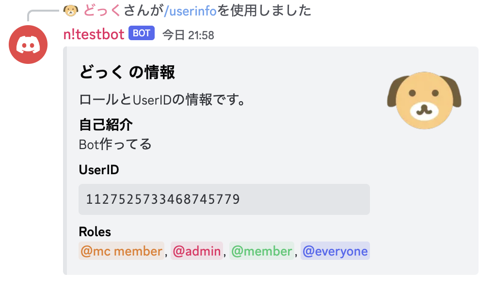
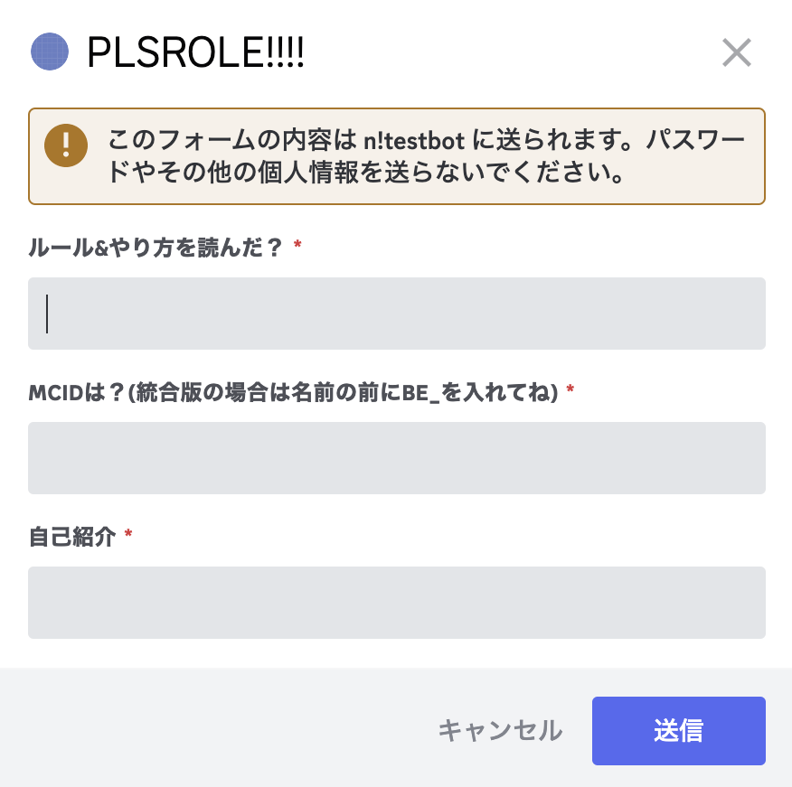
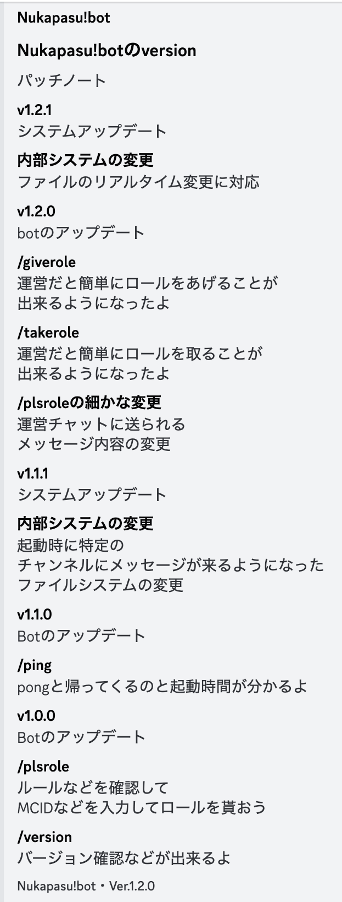

n!bot Versions
-
Beta Ver.1.3.1
以前からあったバグを修正したよ
/versionsをこのサイトに行くようにして
/versionsの文字を減らしたよ
-
Beta Ver.1.3.0
/userinfoの自己紹介機(マイクラ参加勢限定)のや
 
/mcplsroleでの自己紹介の編集ができるようになったよ
/plsroleでmcmemberからmemberに変更して
/mcplsroleでmcmemberを取得できるようになったよ
-
Ver.1.3.0以来のバージョン
いちいち書くのめんどいからスクショ
